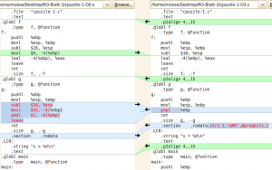
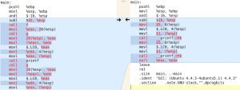
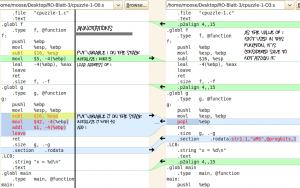
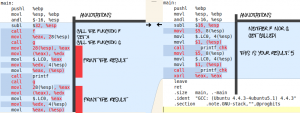

What is the output of the following program?
#include <stdio.h>
int* f()
{
int i = 5;
return &i;
}
void g()
{
int j = 42;
j++;
}
int main()
{
int* x = f();
g();
printf("x = %d\n", *x);
g();
printf("x = %d\n", *x);
return 0;
}
Short Answer
It depends on your compiler flags!
If you compile it with no optimization, you might get 43:
$ gcc -O0 cpuzzle-1.c ; ./a.out
aufgabe-3.c: In function ‘f’:
aufgabe-3.c:5: warning: function returns address of local variable
x = 43
x = 43
If you compile it with -O3 Optimization, you might get 5.
$ gcc -O3 cpuzzle-1.c ; ./a.out
aufgabe-3.c: In function ‘f’:
aufgabe-3.c:5: warning: function returns address of local variable
x = 5
x = 5
Long answer
The general answer
Let's analyse this code line by line.
Line 3 - 7 is a function f that returns a pointer to an integer. The pointer points to a local variable. As far as I know it is not defined what value should be there after you leave the function (has anybody a source for that?). The variable is a so called local or automatic variable and is located on the stack frame.
Line 9 - 14 is a function g that doesn't take any parameter and doesn't return anything. This function should not have any influence on the behavior of the program. It puts 42 on the stack and increases it by one.
Line 17 calls f and stores the returned function pointer in the variable x.
Line 18 calls g. Remember that g should not have any influence on the other program. But you saved a pointer to a local variable which is not in the scope of the main function. So g is allowed to use the space which was previously used by the local variable i in the function f. It uses this space for j = 42 and increases it by 1. So if you access the address of the former variable i in f you will get 43.
Actual assembly code
You still want to get more into detail? Ok ... First you should get your assembly code. If you're running a Linux machine, you can type this into the console:
gcc -S -O0 cpuzzle-1.c ; gcc cpuzzle-1.c -o cpuzzle; mv cpuzzle-1.s cpuzzle-1-O0.s
This will create a file called "cpuzzle-1.s" which contains the assembly code for the non-optimized version. Rename it into "cpuzzle-1-O0.c". Then the same for O3:
gcc -S -O3 cpuzzle-1.c ; gcc cpuzzle-1.c -o cpuzzle; mv cpuzzle-1.s cpuzzle-1-O3.s
Now you can compare those two with meld or any other diff Tool:
{kind=link}

The O3 code got an additional .p2align 4,,15
.p2align 4,,15 means: When allocating memory, align it such that each new section must start at a location with 4 0's at the end (i.e. a multiple of 16 bytes), except for if more than 15 bytes must be skipped.
Quoted from MooseBoy
It makes sense to store the data this way, as your computer can only access blocks. If one piece of data is half in one block, half in the other, you have to make two (slow) memory-accesses.
{kind=link}

It is quite difficult to talk about it, so I made some annotations to this code. I have to admit that I don't know why the compiler does most of the optimizations ☹
{kind=link}

{kind=link}

You might also be interested in __printf_chk. An implementation is here.
What you should have learned
Never return pointers to local variables / variables in the wrong scope.
See also
- Wikipedia:
- Get your programs assembly code and more information
- Der "Stack Frame" (German article about the stack frame)